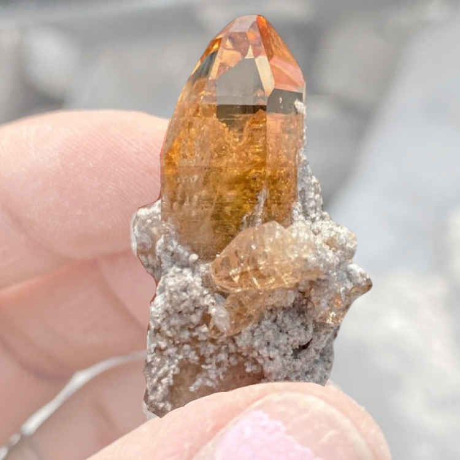

New here?

New to rockhounding and don't know where to start? Not to worry, we will show you the ropes. Click below to head over to our "Getting Started" guide
Getting StartedRocks & Minerals In Louisiana


Though Louisiana is better known for its rich culture and vibrant landscapes, it also offers unique rockhounding experiences. Its diverse geology, shaped by the Mississippi River, provides a variety of fossils, petrified wood, and agates. Some popular locations for rockhounding include the gravel bars along the Mississippi River and various coastal beaches where unique finds can be unearthed. Both amateur and seasoned rockhounders will enjoy uncovering the hidden gems of Louisiana's geological past.
Sponsored Dig Site
Own a digsite you would like to advertize in Louisiana? Contact us for more information about being our sponsor of the month! Email sponsors@rockhounding.org for more information.
Dig With UsPopular Rocks In Louisiana
-
 Red Jasper
Red JasperRed Jasper, a vibrant red variety of chalcedony, can be found in Louisiana's gravel deposits. It has been used as a gemstone and ornamental material for centuries.
Read More -
 Quartz
QuartzQuartz, one of the most common minerals on Earth, can be found throughout Louisiana. It occurs in various forms, including clear, milky, and smoky quartz.
Read More -
 Calcite
CalciteCalcite, a common carbonate mineral, can be found in Louisiana's limestone and marl formations. It occurs in various colors, including green, due to the presence of impurities.
Read More -
 Oyster Fossils
Oyster FossilsOyster fossils are abundant in Louisiana, particularly in the coastal areas. These ancient marine animals thrived in the warm, shallow seas that once covered the region.
Read More -
 Petrified Wood
Petrified WoodPetrified wood, formed when minerals replace the organic material of buried trees, can be found in several locations across Louisiana. It is often collected for its beautiful patterns and colors.
Read More -
 Silver
SilverSilver, a precious metal, has been found in small quantities in Louisiana. It is often associated with copper and other base metal deposits.
Read More -
 Barite
BariteBarite, a heavy sulfate mineral, is found in Louisiana's sedimentary rocks. It forms beautiful yellow crystals and is often used as a source of barium.
Read More -
 Pyrite
PyritePyrite, also known as fool's gold, is found in Louisiana's sedimentary rocks. Its metallic luster and brassy-yellow hue make it a popular collector's item.
Read More -
 Ammonite Fossils
Ammonite FossilsAmmonite fossils, the remains of ancient marine animals, can be found in Louisiana's coastal areas. They are characterized by their beautiful spiral shells.
Read More -
 Agate
AgateAgate, a colorful variety of chalcedony, can be found in Louisiana. It forms in various shades, including orange, and is often used for ornamental purposes.
Read More
Popular Areas In Louisiana
-
 Graveyard Point
Graveyard PointGraveyard Point, located near the Sabine River, is a famous spot for finding agates in Louisiana. These agates come in various colors and patterns, making them highly sought after by collectors.
Read More -
 Kisatchie National Forest
Kisatchie National ForestKisatchie National Forest, located in central Louisiana, is a great place to find quartz crystals. These beautiful, naturally occurring minerals can be found in various colors and are popular among collectors.
Read More
Geology of Louisiana
Louisiana's geology is distinct and largely influenced by its location along the Gulf of Mexico. The state's geological history can be traced back to the Mesozoic Era, when large parts of Louisiana were covered by shallow seas. Over time, these seas deposited layers of sediment, creating the sedimentary rocks that dominate the state's geology.
The Cenozoic Era brought significant changes to Louisiana's landscape, with the formation of the Mississippi River and the development of extensive delta systems. The river deposited massive amounts of sediment, eventually creating the Mississippi Alluvial Plain and the Gulf Coastal Plain. These low-lying regions are characterized by flat topography and the presence of numerous swamps and marshes.
Louisiana's coastal geology is dominated by the processes of erosion and deposition, which continually reshape the state's shoreline. These processes, combined with the ongoing subsidence of the Mississippi Delta region, have made Louisiana particularly susceptible to coastal erosion and flooding.
Despite its relatively flat landscape, Louisiana is home to a variety of interesting geological features and mineral resources, such as salt domes, petroleum, and natural gas. These resources have played a significant role in the state's history and continue to be important to its economy today.